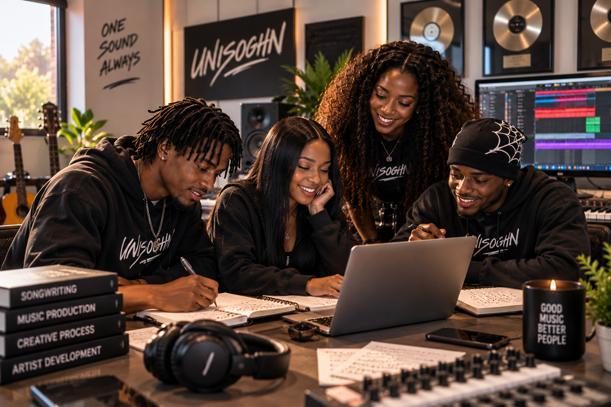
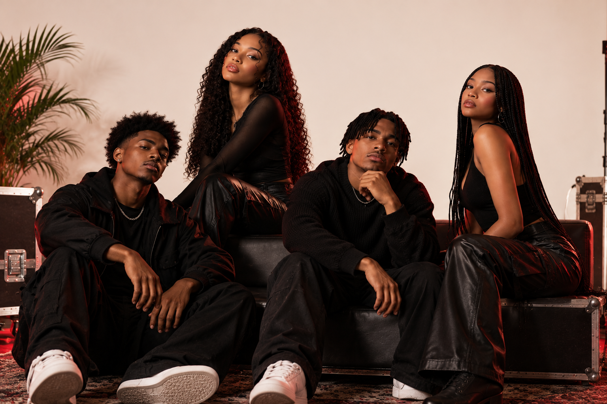
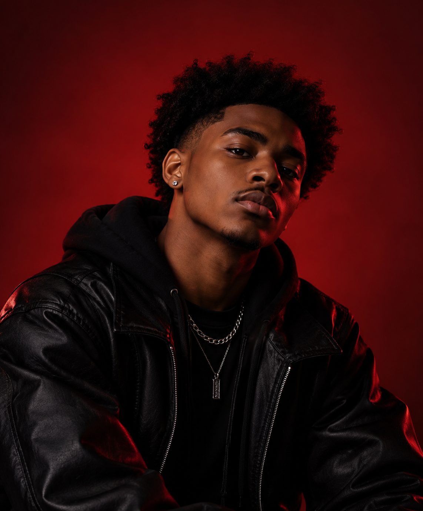
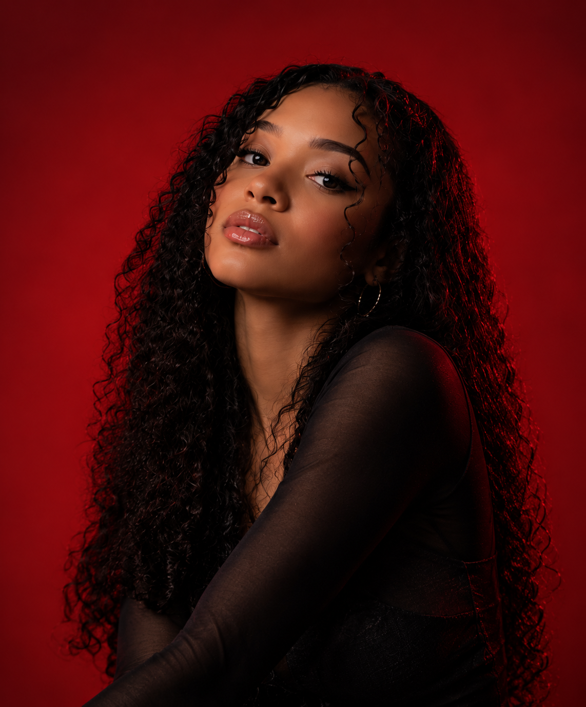
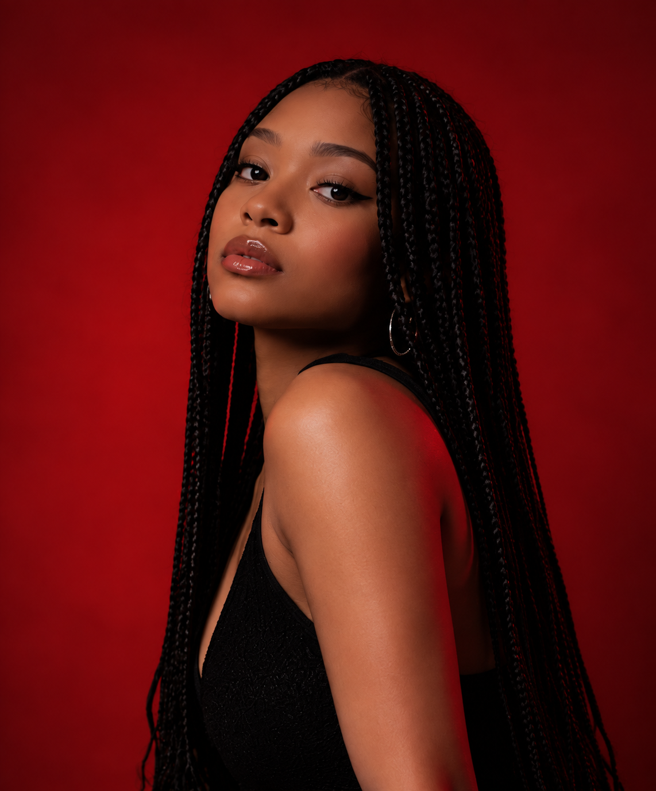

UNISOGHN
UNISOGHN/ABOUT
DIFFERENT VOICES.
ONE VISION.
UNISOGHN is built on individuality,
connection, and the belief that different
voices can create something stronger together


OUR STORY
MORE THAN A SOUND
UNISOGHN began with a shared passion for music and a desire to create
without losing individuality. Each member brings a different perspective,
style, and sound to the group. Together, those differences become the
identity of UNISOGHN.
MEET UNISOGHN
FOUR VOICES. ONE IDENTITY.
OUR ARTISTS
Malik
Vocals / Production
Malik is the creative backbone of UNISOGHN, bringing a unique blend of raw emotion and technical skill to the sound. As a vocalist and producer, he crafts the group's sonic foundation - weaving soulful melodies with atmospheric beats that hit deep. Inspired by life, love, and the struggles of his generation, Malik turns real experiences into music that speaks to the heart and the mind. When he's not in the studio, you'll find him chasing new sounds, studying the craft, and pouring his energy into the vision of UNISOGHN.
REAL SOUNDS. REAL LIFE.
Aria
Vocals
Aria's voice is the heartbeat of UNISOGHN. With a sound that's both powerful and vulnerable, she brings depth, emotion, and authenticity to every track. Her vocals blend effortless control with raw feeling, creating a sound that lingers long after the music fades. Aria draws inspiration from her personal journey, love, and the power of self-discovery. She's not just a singer — she's a storyteller, using her voice to turn pain into beauty and experience into art.
SOUL. POWER. TRUTH.Jordan
Vocals / Writing
Jordan's words give UNISOGHN its edge. As a vocalist and writer, he brings depth, perspective, and real-life experiences to the forefront. His lyrics are honest, raw, and intentional — reflecting his growth, struggles, and dreams. Jordan believes in the power of storytelling, and he uses his voice to speak for the ones who feel unheard. Whether he's writing, recording, or performing, he's always creating with purpose, pushing the group's message while staying true to himself.
REAL STORIES. LASTING IMPACT.
Nia
Vocals
Nia brings a smooth yet powerful presence to UNISOGHN. Her voice is rich, expressive, and full of life - effortlessly blending strength and softness in every verse. As a vocalist, she adds balance, beauty, and a unique perspective to the group's sound. Nia is inspired by love, self-worth, and the journey of becoming the best version of herself. She's here to make music that heals, connects, and reminds people of their power.
BEAUTY. STRENGTH. PURPOSE.